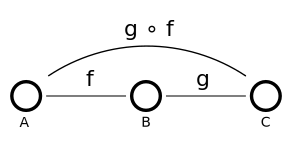
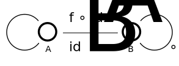
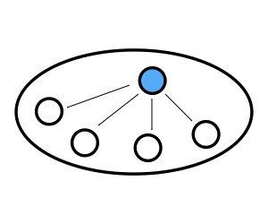

Forward
Categorical programming is a style of programming that uses high-level concepts from mathematics as design patterns for organising, abstracting and structuring logic with the end goal of having well-defined definitions and a rigorous system for reasoning about both the type and value semantics of a program.
This tutorial is a humble attempt to provide a bridge between the dense literature and an easy introduction to category theory for Haskell programmers.
This series can also be thought as surface reading of the brilliant categories library on Hackage and many examples are drawn from it.
Categories
A category $ \C $ is a construction with four definitions:
- A collection of objects. Written $ \text{ob}(\C) $.
 .
.
- A collection of morphisms. Written $ \text{hom}(\C) $.
 .
.
A composition operation $ ( \circ ) $ or written in Haskell as $ ( . ) $. The composition of morphsism yields morphisms in $ \C $.
\[ ( f . g ) \]
\[ ( f \circ g ) \]
 .
.
For each object $ A $ there is an identity morphism .
\[ \text{id}_A \]
 .
.
Category of Haskell types
In Haskell we’re constantly dealing with categorical structures. In fact they’re baked the very foundations of the language translate, and a large part of Haskell can be cast nicely into categorical terms. We call this category HASK.
| Category Theory | Haskell | Examples |
|---|---|---|
| Objects | Haskell Types |
|
| Morphisms | Haskell Functions |
|
| Composition | Function Composition |
|
The set of all non-polymorphic Haskell types forms a category with Haskell functions as morphisms. For example:
head :: [Int] -> Int
head (x:_) = x
Prelude> head [1,2,3] = 1
The Haskell prelude also contains a function composition operator which should be familiar to all.
(.) :: (b -> c) -> (a -> b) -> a -> c
g . f = \x -> g (f x)
And similarly a polymorphic identity function.
id :: forall a. a -> a
id x = x
Like most statically typed languages Haskell enforces types in composition.
f :: A -> B
g :: B -> C
g . f :: A -> CHomsets
A category is constructed out a collection of morphisms, over objects in the categotry. The collection of other morphisms in a category is called a homset and written as:
\[ \hom{\C} \]
A individual a morphism $ f $ has two associated values, its domain $ \text{dom}(f) $ and codomain $ \text{cod}(f) $.
Elements in the homset are morphisms between objects in $ \C $, namely if $ A,B \in \ob{\C} $ then the set of morphisms in $ \C $ between $ A $ and $ B $ is written:
\[ \hom{A,B} \]
For composition to be well defined we require that composition itself be a mapping only defined for:
\[ ( \circ ) : \hom{B,C} \rightarrow \hom{A,B} \rightarrow \hom{A,C} \]
Formal Definition of Categories
I will use the following tabular format for the definition of categories from here out. The first column is the type of construction, the second column is the constraints on the objects involved in the definition, and the third column is the definition of the construction.
| Category | ||
|---|---|---|
| Objects | \[ X, Y \in \C \] | |
| Morphisms | \[ f \in \hom{\C} \] | \[ f: X \rightarrow Y \] |
| Composition | \[ f : X \rightarrow Y \\ g : Y \rightarrow Z \] | \[ g . f : X \rightarrow Z \] |
| Identities | \[ \text{For all } X \in \C \] | \[ \text{id}_A : X \rightarrow X \] |
.
The corresponding definition table for a category is that of the laws for the category.
| Category Laws | ||
|---|---|---|
| Identity | \[ A \in \C \\ f : A \rightarrow B \] | \[ f . \text{id}_A = \text{id}_B . f = f \] |
| Associativity | \[ f,g,h \in \hom{\C} \] | \[ ( h . g ) . f = h . ( g . f ) \] |
.
 .
.
In textbooks these diagrams are often written in the common diagramatic form:
 .
.
 .
.
SET
Categories are often written in bold. For example the category SET is often a motivating topic of discussion since classical set theoretic definitions are often generalized.
| Set | ||
|---|---|---|
| Objects | Set: $ S $ | …………………… |
| Morphisms | Total functions over $ S $ | …………………… |
| Composition | \[ f : A \rightarrow B \\ g : B \rightarrow C \] | \[ g \circ f : A \rightarrow C \\ g \circ f = \lambda a. g (f a) \] |
| Identities | \[ A \in S \] | \[ \text{id}_A :: A \rightarrow A \\ \text{id}_A = \lambda x . x \] |
With the usual properties:
| Set | |
|---|---|
| Associativity | $ ( f \circ g ) \circ h = f \circ ( g \circ h ) $ |
| Identities | $ \text{id}_B \circ f = f \circ \text{id}_A = f $ |
If we define a toy Cat typeclass with the above definition and define an instance for Haskell (->) from GHC.Prim we have:
type Hask = (->)
class Cat cat where
ident :: cat a a
comp :: cat b c -> cat a b -> cat a c
instance Cat Hask where
ident x = x
comp f g = \x -> f (g x)We see that we of course recover the identitiy function and compostion from the Prelude.
instance Cat Hask where
ident = id
comp = (.)
-- Equivalent definition from Control.Category
instance Category (->) where
id = Prelude.id
(.) = (Prelude..)It is worth noting the common confusion that morphisms are not functions. It is the other way around, in the category SET functions are morphisms with objects as sets but this is a special case. In general morphisms are a pure abstraction which have structural similarity to functions.
Classes of categories
There are three classes of categories that are studied:
Concrete categories - Model mathematical structures with structure-preserving mappings between objects. Examples: ( Vec )
Real world categories - Model real world systems such as type systems and physical processes. Examples: ( Hask )
Abstract categories - Categories studied for relationship to other categories or motivating the discussion of the large scale structure of mathematics. Examples: ( Cat )
Four out purposes we’ll discuss a small set of concrete categories that don’t require much knowledge of abstract algebra.
THe notion of a subcategory is also important, it is a category contained within another category which also satisfies the category construction.
It is are illuminating to look at the trivial categories , namely categories with small amounts of objects and morphisms to gain a general understanding of their structure even though they are not of much practical interest.
There are also some simple categories, the simplest being the Zero category, which is the category with no objects and no morphisms.
| Zero | ||
|---|---|---|
| Objects | \[ \emptyset \] | |
| Morphisms | \[ \emptyset \] | |
| Composition | * | * |
| Identities | \[ \text{For all } A \] | \[ \text{id}_A : A \rightarrow A \] |
The category laws are vacuously true for this category.
A slightly more interesting ( only slightly! ) is the One category.
 .
.
| One | ||
|---|---|---|
| Objects | singleton set | \[ {X} \] |
| Morphisms | \[ f : X \rightarrow X \] | |
| Composition | \[ (f . f) = \text{id}_X \] | |
| Identities | \[ \text{For all } A \] | \[ \text{id}_X : X \rightarrow X \\ \text{id}_X = \lambda x. X \] |
Since the only morphism in the category is also the identity all the laws hold merely by substitution.
It is also trivially true that Zero is a subcategory of One.
| Two | ||
|---|---|---|
| Objects | \[ {X,Y} \] | |
| Morphisms | \[ f : X \rightarrow X \\ g : Y \rightarrow Y \] | |
| Composition | \[ (f . f) = \text{id}_X \] | |
| Identities | \[ \text{For all } A \] | \[ \text{id}_X : X \rightarrow X \\ \text{id}_X = \lambda x. X \\ \text{id}_Y : Y \rightarrow Y \\ \text{id}_Y = \lambda x. X \] |
 .
.
{-# LANGUAGE GADTs #-}
import Prelude hiding (id, (.))
import Control.Category
data Zero a b where
Idz :: Zero () ()
data One a b where
Ida :: One a ()
instance Category Zero where
id = Idz
Idz . Idz = Idz
instance Category One where
id = Ida
Ida . Ida = IdaDiscrete Categories
Discrete categories are categories where the only morphisms are identity morphisms.
{-# LANGUAGE GADTs #-}
import Prelude hiding (id, (.))
import Control.Category
data Discrete n n where
Auto :: Discrete n n
instance Category Discrete where
id = Auto
Auto . Auto = AutoIn a discrete category it follows that if there exists a morphisms between objects $ A $ and $ B $ then $ A $ must equal $ B $. Discrete categories are often indexed by the cardinality of the number of singleton objects in the category.
Algebraic Categories
From algebra there are several examples of categories. For example vector spaces over the real field.
| Vec | |
|---|---|
| Objects | Vector spaces |
| Morphisms | Linear mappings |
| Composition | Composition of linear mappings |
| Identities |
| Grp | |
|---|---|
| Objects | Groups |
| Morphisms | Group homomorphisms |
| Composition | Composition of group homomorphsisms |
| Identities | Identity mappings |
| Mon | |
|---|---|
| Objects | Monoids |
| Morphisms | Monoid homomorphisms |
| Composition | Composition of monoid homomorphsisms |
| Identities | Identity mappings |
For example considering the Monoid type of Haskell string types we find that this gives rise to a subcategory of Hask. Consider the type definition for Monoid.
class Monoid a where
mempty :: a
mappend :: a -> a -> a
mconcat :: [a] -> aThe instance for String types is:
type String = [Char]
instance Monoid String where
mempty = []
mappend = (++)| Str | ||
|---|---|---|
| Objects | Characters |
Char
|
| Morphisms | Strings |
[Char]
|
| Composition | String concatention |
(++)
|
| Identities | Empty string |
""
|
It is easy to show that the identity laws hold.
a ++ "" = "" ++ a == aConcatetention is a linear mapping so it is also easy to show that composition laws must also hold for all characters.
(a ++ b) ++ c = a ++ (b ++ c)In short we epxect order-independent append operations. For example:
"foo" ++ "bar" + "" ++ "baz" == "foobarbaz"
"foo" ++ "bar" ++ "baz" == "foobarbaz"
"foo" ++ ("bar" ++ "baz") == "foobarbaz"
("foo" ++ "bar") ++ "baz" == "foobarbaz"Some More Categories
Logic
Deductive logic also forms an important category with propositions as objects and proof trees as morphisms between objects.
| Deductive Logic ( Prf ) | ||
|---|---|---|
| Objects | Propositions | $ \alpha,\beta,\gamma $ |
| Morphisms | Proofs | $ \alpha \vdash \beta $ |
| Composition | Proof Trees | \[ \frac{\alpha \vdash \beta \hspace{1em} \beta \vdash \gamma}{\alpha \vdash \gamma} \] |
| Identities | Tautologies | \[ \frac{}{\alpha \vdash \alpha} \] |
Duality
The important results of category is the notion of duality. Simply put for any theorem about a category $ \C $ we can obtain a new theorem by swapping domain and codomain of each morphism and changing the argument order of composition we obtain a result that also holds over in category $ \C^\text{op} $ referred to the dual theorem.
- Objects of $ \C^\text{op} $ are identical to $ \C $.
- Morphisms of the form $ f : B \rightarrow A $ in $ \C^\text{op} $ are the morphisms $ f : A \rightarrow B $ in $ \C $.
- Compositions of the form $ g \circ f $ in $ \C^\text{op} $ are of the form $ f \circ g $ in $ \C $.
- Identities in $ \C^\text{op} $ are the same as in $ \C $.
We can build dual categories in Haskell from categories
{-# LANGUAGE TypeOperators #-}
data Op k a b = Op { unOp :: k b a }
instance Category k => Category (Op k) where
id = Op id
(Op f) . (Op g) = Op (g . f)Terminal and Initial
Many categories have a special elements or classes of elements where morphisms between objects are uniquely identified. For example a the case where all objects in the category have a single morphism between a single element, such an element is called initial. For an initial object $ I \in \text{obj}(\C) $ to be initial we have:
\[ \forall A \in \ob{\C} \hspace{1em} | \text{hom}(0, A) | = 1 \]
This is often written as an arrow with an excalamation point to indicate a unique morphism.
\[ 0 \xrightarrow{\hspace{1em}!\hspace{1em}} A. \]
.
The dual notion is that of a terminal element $ 1 \in \ob{\C} $.
\[ \forall A \in \ob{\C} \hspace{1em} | \text{hom}(A, 1) | = 1 \]
\[ A \xrightarrow{\hspace{1em}!\hspace{1em}} 1. \]
 .
.
Initial and terminal objects are unique up to isomorphism. For example in the category Set the initial element is the null set while the terminal element is the singleton set collapsing any set to a singleton set.
\[ \begin{align} x &\xrightarrow{\hspace{1em}!\hspace{1em}} \{x\} \\ \{\} &\xrightarrow{\hspace{1em}!\hspace{1em}} x \end{align} \]
In the category One the terminal object is also the initial object, such a category is said to have a zero object.
In the category of vector spaces Vec the zero object is the zero dimensional vector space.
The subject of whether Hask has initial and terminal objects is a hairy issue that divides the implementation of Haskell language from the category theoretic interpretation of Haskell. Although the definitions below satisfy the requirements it is possible to find counter examples in the Haskell runtime that would break the neccessary properties. See the void package for more details.
Initial
newtype Void = Void Void
absurd :: Void -> a
absurd (Void a) = absurd aTerminal
data () = ()
term :: forall a. a -> ()
term _ = () The category library defines this notation using fairly exotic type structures but this concept can be modeled in Haskell’s type system!
class Category k => HasTerminalObject k where
type Terminal k :: *
terminate :: a `k` Terminal k
class Category k => HasInitialObject k where
type Initial k :: *
initiate :: Initial k `k` a